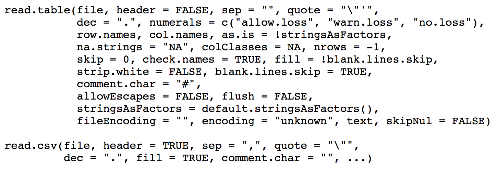

4 Data Frames and Data Manipulation
4.1 Data I/O
The data input and output functions that are provided here are those of what we would call “base R.” Simply note for now that there is more data I/O functionality available through the tidyverse package.
If your data file is an ASCII (i.e., human-readable) text file…
then you will generally use read.table() or read.csv().
read.table(): used with data whose values are separated by spacesread.csv(): used when you have “comma-separated values”
Other alternatives include read.delim() and scan() (for more general formats), along with readLines() (which simply reads each line of a file into an element of a character vector).
We won’t go into binary (i.e., non-human-readable) files, as how to read in their data can be highly domain specific. To get a handle on how you might proceed if a binary reader has not already been coded for you, see the help page for connections.

Beware the arguments!
headerprovides column names, and isFALSEby default forread.table()stringsAsFactorsis defaultTRUEand will lead to your character string vector being treated as a factor variablena.stringsisNAby default, but beware: domain scientists use many symbols and/or numbers to indicate that data are missing (like -99)
Other important arguments:
skip: if there are lines of metadata preceding the first line of data, useskipto skip over them.nrows: instead of reading the whole file, read in this many rows only
Side effects:
If your column name has white spaces, read.table() and read.csv() will fill them in with periods.
As you might expect, read.table() and read.csv() have analogous write functions: write.table() and write.csv(). The two main arguments to look out for are:
quote: defaultTRUE…it puts double quotes around your column (and row) names. Set this toFALSE.row.names: defaultTRUE…which means, if you don’t have row names in your data frame, you’ll have “1”, “2”, etc. as the row names in your output. Also set this toFALSEif you don’t have row names already.
One can save R objects (vectors, data frames, etc.) in a binary format, so as to be loaded later:
x <- 5
y <- list(a=1:2,b=TRUE)
save(x,y,file="tmp.Rdata")
rm(x,y)
gc()
load("tmp.Rdata")
x
yNote the following:
- The suffixes
.Rdataand.Rdaare interchangable - There is a
saveRDS()function which saves oneRobject in a file with suffix.Rds…this object may be given a new name when read in withreadRDS()
4.1.1 Data I/O: Lab Exercises
Please download and work through the following R Markdown file:
The solutions are provided here.
To complete the lab, you will need to download the following datasets: emline.csv, simple.txt, students.csv, and students.txt.
4.2 Split/Apply/Combine
The split-apply-combine paradigm is straightforward: you take a data frame that contains one or more columns with factor variables (i.e., data measured in categories), and
- split it, e.g., break the data frame up into a list of smaller data frames, one for each factor or combination of factors;
- apply a function to each of the smaller data frames; and
- combine the results together. (Note that there is no explicit “combine” function in
R, per se; combination often “just occurs” as a by-product of application.)
One can do this with base R functions, although there are some limitations that can crop up from time to time. (See, e.g., this paper in the Journal of Statistical Software. Thus after discussing typical base R functions we will begin venturing into the tidyverse, to talk about dplyr, etc.
Above, we use the word “factors.” It is inevitable that in statistical analyses you will at some point have to deal with factors: variables with discrete values that often do not clearly map to the real number line. For instance, the state dataset (part of R’s datasets package) includes state.region, which labels each state with the region of the U.S. it is in:
state.regionNote that there are four (not five) levels for this factor: “Northeast,” “South,” “North Central,” and “West.”
levels(state.region)How are factor variables treated in regression? As numbers, counting from one.
typeof(state.region) # R views the factors as integers, not words
class(state.region) # ...and it knows the factors are factors
levels(state.region) # The levels are 1, 2, 3, ... from left to right
as.numeric(state.region)The base-R split() function splits up the rows of a data frame (or elements of a vector) according to the levels of one or more factors.
Usage: split(df,f=my.index), where df is a data frame (vectors are allowed too) and my.index specifies the factor variable(s). The output is a list of data frames (or vectors).
galaxy.df = read.table("http://www.stat.cmu.edu/~pfreeman/GalaxyStatistics.txt",header=TRUE,
stringsAsFactors=TRUE)
dim(galaxy.df) # a field and two statistics for 8358 galaxies
levels(galaxy.df$Field) # IDs of the five fields
galaxy.split <- split(galaxy.df,f=galaxy.df$Field)
typeof(galaxy.split)
names(galaxy.split)
head(galaxy.split[[1]],5) # let's look at the first list componentThe apply() function works as follows:
apply(<data frame/matrix>,MARGIN=<dim>,FUN=<function>)<dim>= 1 for rows, 2 for columns, etc. The dimensionality is not limited to 2!<function>is an existingRfunction or one that you write yourself
Example: you have a data frame whose two columns contain three random samples from a standard normal and three random samples from a Uniform(0,1) distribution respectively. We determine the range, the mean, and the index of the maximum value in each column…
set.seed(101)
df <- data.frame(n=rnorm(3),u=runif(3))
apply(df,MARGIN=2,FUN=range)
apply(df,MARGIN=2,FUN=mean)
apply(df,2,which.max) # dropping the argument namesTo apply your own function: define it, then pass it along. Here, let’s define a function that gives the index of the maximum value, and the maximum value itself, along each row of a matrix:
mat <- matrix(rnorm(9),nrow=3)
my.fun <- function(x) { return(c(which.max(x),max(x))) } # Note: x is the row/column of interest
mat
apply(mat,1,my.fun)Note: if my.fun() returns \(k\) separate values, then the output will have \(k\) rows, regardless of the value for MARGIN. When MARGIN=2, that’s generally OK, but when it equals 1 you might want to transpose your output to create something more easily interpreted:
t(apply(mat,1,my.fun)) # Now each row of output corresponds to a row of inputYou need not define the function before the call to apply():
t(apply(mat,1,function(x){c(which.max(x),max(x))}))Up until now, the functions that are passed to apply() have a single argument (or only need to have a single argument specified, with the rest having default values), usually given as x.
If you need to specify additional arguments for the function, specify them in the call to apply():
mat <- matrix(runif(100),10,10)
apply(mat,1,mean) # compute row means
apply(mat,1,mean,trim=0.1) # compute 10% trimmed means for each rowTo review:
- if
my.fun()returns a single value,apply()will return a vector of values, one for each row of input ifMARGIN= 1, or each column of input ifMARGIN= 2 - if
my.fun()returns a vector of values of length \(k\),apply()will return a \(k \times n\) matrix, where \(n\) is the number of rows (or columns) of input ifMARGIN= 1 (or 2)…you may need to transpose the output witht()to more easily interpret it, ifMARGIN = 1 - if
my.fun()returns vectors of differents lengths for each input row (or column), the output ofapply()will be a list of length the number of rows (or columns) - if
my.fun()returns a list for each input row (or column), the output ofapply()will be a list of lists of length the number of rows (or columns)
However, don’t use apply() to do everything. There are optimized functions that allow one to compute…
- sums along rows (or columns):
rowSums()(orcolSums()) - means along rows (or columns):
rowMeans()(orcolMeans()) - the position of the maximum value along each row of a matrix:
max.col()
4.2.1 Split/Apply/Combine: Lab Exercises
Please download and work through the following R Markdown file:
The solutions are provided here.
4.3 Pipes
The tidyverse, which contain variants of split-apply-combine functions existing outside of base R, relies on so-called “pipes.” What do we need to know about pipes?
tidyversefunctions perform at their best when strung together using the pipe operator.- The pipe operator is
%>%. NOTE: usectrl + shift + mas anRStudioshortcut. - The pipe operator actually comes from the
magrittrpackage (automatically loaded with thetidyverse), so it can be used on its own, completely independently of the rest of thetidyverse.
But what does a pipe do?
It takes the return value from one function call and automatically feeds it in as an input to another function.
Note that at the Unix command line, for instance, we also have pipes, as in:
ls -l | grep tidy | wc -lThis lists all the files in the present directory, selects those with the string “tidy” in them, then determines word counts for just those files.
Normally you would just load the entire tidyverse, but just to make the point that the magrittr package is the one with the pipe, and that the pipe can be used with non-tidyverse functions, we’ll load magrittr alone.
# install the package if it doesn't exist...
# require() will load it if it is there as a side-effect
if ( require(magrittr) == FALSE ) {
install.packages("magrittr",repos="https://cloud.r-project.org")
library(magrittr)
}We can write exp(1) with pipes as 1 %>% exp(), and log(exp(1)) as 1 %>% exp() %>% log()
exp(1)
1 %>% exp() # actually, you don't even need the parantheses if there was to be only one argument
1 %>% exp %>% logPassing a single argument through pipes, we interpret something like:
x %>% f %>% g %>% h # don't code this! it is a visual exampleas h(g(f(x))). So, in your mind, when you see %>%, you should say “and then.”
To pass a single value x to a function that has, e.g., two arguments (x and y), you would write
x %>% f(y) # don't code this either! Here, x is assumed to be the first argument of f(), and y the second. Later we will see how to generalize this so that x need not be the first argument of f().
See if you can interpret the command below without running it, then run it in your R console to check your understanding:
mtcars %>% head(4) %>% View(Note: mtcars is one of the many datasets that are included in the base-R environment. To see a list of all of the datasets, use library(help="datasets").)
The answer: it takes the data frame mtcars (32 rows, 11 columns), extracts the first four rows, then passes those four rows to a viewer.
What’s the “old school” (i.e., base R) way of doing this?
View(head(mtcars,4))Notice that, with pipes:
- your code is more easily read and interpreted (arguably); and
- you can run partial commands more easily (which is helpful for debugging).
The command x %>% f(y) can be equivalently written in dot notation as:
x %>% f(.,y) # and don't code thisWhat’s the advantage of using dots? Sometimes you want to pass in a variable as the second or third (meaning, not first) argument to a function, with a pipe. As in…
x %>% f(y,.) # nor thiswhich is equivalent to evaluating f(y,x).
Again, see if you can interpret the code below without running it, then run it in your R console as a way to check your understanding:
x <- seq(-2*pi,2*pi,len=1000)
x %>% sin %>% abs %>% plot(x,.,typ="l")4.4 Data Manipulation with dplyr
To make sense of this set of slides, think of data frames as nouns and dplyr functions as verbs, actions that you apply to manipulate the data frames. Here, we will learn the following dplyr verbs:
slice(): subset rows based on integer indexingfilter(): subset rows based on logical criteriaselect(): select certain columnsarrange(): order rows by value of a columnrename(): rename columnsmutate(): create new columnsmutate_at(): apply a function to given columns
Calling dplyr verbs always outputs a new data frame; it does not alter the existing data frame. To save the new data frame, simply assign it to a variable, as in df.new <- df %>% ... or df %>% ... -> df.new.
So to keep the changes, we have to reassign the data frame to be the output of the pipe, as we will see below.
To load the tidyverse…
# install the package if it doesn't exist...
# require() will load it if it is there as a side-effect
if ( require(tidyverse) == FALSE ) {
install.packages("tidyverse",repos="https://cloud.r-project.org")
suppressWarnings(library(tidyverse))
}Use slice() when you want to indicate certain row numbers need to be kept:
mtcars %>% slice(c(7,8,14:15))
# Compare with base R: mtcars[c(7,8,14:15),]Slicing can also be done “negatively”:
mtcars %>% slice(-c(1:2,19:23)) %>% nrow()Use filter() when you want to subset rows based on logical conditions:
mtcars %>% filter(., (mpg >= 14 & disp >= 200) | (drat <= 3)) %>% head(., 2)
# Base R:
# head(subset(mtcars, (mpg >= 14 & disp >= 200) | (drat <= 3)), 2)
# head(mtcars[(mtcars$mpg >= 14 & mtcars$disp >= 200) | (mtcars$drat <= 3),], 2)Use select() when you want to pick out certain columns:
mtcars %>% select(., cyl, disp, hp) %>% head(., 2)
# Base R:
# head(mtcars[, c("cyl", "disp", "hp")], 2)Very handy selections using dplyr helper functions:
mtcars %>% select(., starts_with("d")) %>% head(., 2)
# Base R (yikes!):
# d_colnames <- grep(x = colnames(mtcars), pattern = "^d")
# head(mtcars[, d_colnames], 2)We can do many other things as well:
mtcars %>% select(., ends_with('t')) %>% head(., 2)
mtcars %>% select(., ends_with('yl')) %>% head(., 2)
mtcars %>% select(., contains('ar')) %>% head(., 2)Use arrange() to order rows by values of a column:
mtcars %>% arrange(., desc(drat)) %>% select(., mpg, disp, drat) %>% head(., 2)
# Base R:
# drat_inds <- order(mtcars$drat, decreasing=TRUE)
# head(mtcars[drat_inds, c("mpg", "disp", "drat")], 2)We can order by multiple columns too:
mtcars %>% arrange(., desc(gear), desc(hp)) %>% select(., gear, hp, everything()) %>% head(., 8)Here, we arrange first in order of gear (decreasing); then, for each unique value of gear, we arrange in order of hp (decreasing).
Use mutate() when you want to create one or several columns:
mtcars = mtcars %>% mutate(., hp_wt = hp/wt, mpg_wt = mpg/wt)
# Base R:
# mtcars$hp_wt <- mtcars$hp/mtcars$wt
# mtcars$mpg_wt <- mtcars$mpg/mtcars$wtUse mutate_at() when you want to apply a function to one or several columns:
mtcars <- mtcars %>% mutate_at(., c("hp_wt", "mpg_wt"), log)
# Base R:
# mtcars$hp_wt <- log(mtcars$hp_wt)
# mtcars$mpg_wt <- log(mtcars$mpg_wt)NOTE: again, calling mutate_at() outputs a new data frame and does not alter the given data frame, so to keep the column transformations, we have to reassign mtcars to be the output of the pipe!
Use rename() to easily rename columns:
mtcars %>% rename(., hp_wt_log=hp_wt, mpg_wt_log=mpg_wt) %>% head(., 2)
# Base R:
# colnames(mtcars)[colnames(mtcars)=="hp_wt"] <- "hp_wt_log"
# colnames(mtcars)[colnames(mtcars)=="mpg_wt"] <- "mpg_wt_log"
# head(mtcars, 2)